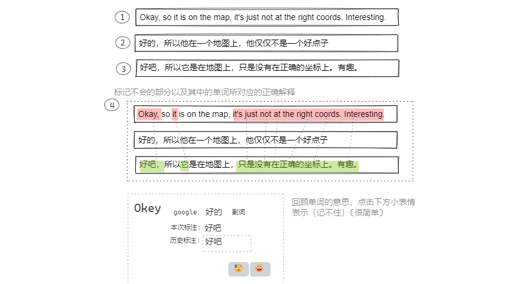
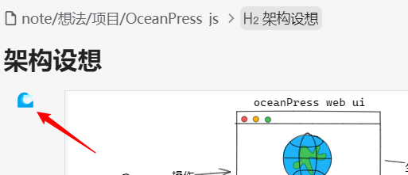

代码片段
pubdate:2020-10-20 14:39:50
tags:代码片段
简短而又有用的一些代码片段，一般都是 ts 版本 可以利用 typescript playground 很方便的将 ts 的代码转为 js 的代码然后使用
依赖浏览器 dom
ts
// 复制文本
export const copy = (str: string) => {
// 第一种 这个在控制台中直接用会报错 Uncaught (in promise) DOMException: Document is not focused.
navigator.clipboard.writeText(str);
};
export const copy2 = (str: string) => {
// 第二种 这个可以直接在浏览器控制台内使用
const input = document.createElement("textarea");
input.style.opacity = "0";
document.body.appendChild(input);
input.value = str;
input.select();
const r = document.execCommand("copy");
input.remove();
return r;
};
纯粹无依赖
Array
数组求和
typescript
/** 数组求和 */
export function ArraySum(arr: T[], f: (el: T) => number) {
return arr.map(f).reduce((a, b) => a + b, 0);
}
数组取随机 n 个元素
typescript
/** 从数组中随机取 n 个元素 */
export function sampleSize([...arr]: T[], n = 1) {
let m = arr.length;
while (m) {
const i = Math.floor(Math.random() * m--);
[arr[m], arr[i]] = [arr[i], arr[m]];
}
return arr.slice(0, n);
}
今天（2020-11-17）发现 GitHub 的消息那里的分页也是存在问题的，就是在一开始如果有两页数据一直点已读然后点下一页发现是空的，再点上一页才能看见消息
数组去重 ＆ 求和
typescript
/** 数组去重
* 1. 可以设置函数来决定什么样算重复
* 2. 可以设置函数来决定遇到重复的结果该怎么合并
*/
export function Array去重(
arr: T[],
/** 需要返回该对象的一个唯一标识（需要是原始值 用于和其他的进行比较） */ f: (el: T) => unknown = (el: T) => el,
/** 用于决定和重复对象的合并方式，默认取后面的值，丢弃旧值 */ mergeF: (a: T, b: T) => T = (a, b) => b,
) {
let result = [] as T[];
let label = [] as unknown[];
for (const el of arr) {
const id = f(el);
const i = label.findIndex((el) => el === id);
if (i !== -1) {
result[i] = mergeF(result[i], el);
} else {
label.push(id);
result.push(el);
}
}
return result;
}
其他代码片段相关
隐藏滚动条 代码片段
CSS
.demo::-webkit-scrollbar {
display: none; /* Chrome Safari */
}
.demo {
scrollbar-width: none; /* firefox */
-ms-overflow-style: none; /* IE 10+ */
overflow-x: hidden;
overflow-y: auto;
}
最近实践
推广
此处推荐一个 chat gpt key 购买网站 - https://console.closeai-asia.com/
我关注的一些优秀的博客： feed
关于此站点 shenzilong.cn
为我个人的笔记公布站点，非盈利、不提供互动、评论等功能，纯静态站点。
域名经过了 icp 备案，使用 cloudfare 对 github pages 进行代理。
我没有添加 广告、跟踪、数据统计、cookie、埋点相关功能（algolia、cloudfare、github pages、jsdelivr、笔记内包含的第三方链接，可能存在基于访问的统计）
崮生_子虚 关于我
短期工作协议（预付费）：爱发电购买
提供我所有技能来解决你的问题，一份时长为1小时。
我是偏前端的全栈开发，也可以为你提供更通用的其他技能，建议先和我沟通在购买。
当我全力在思考或者着手解决问题时是一小时，如果期间不需要我消耗精力的话我不会计算进时间。
支持未用完的额度返还。
欢迎进入 discord 进行交流 qq群：706761641 （心栈空间）
短期工作协议（预付费）：爱发电购买
提供我所有技能来解决你的问题，一份时长为1小时。
我是偏前端的全栈开发，也可以为你提供更通用的其他技能，建议先和我沟通在购买。
当我全力在思考或者着手解决问题时是一小时，如果期间不需要我消耗精力的话我不会计算进时间。
支持未用完的额度返还。
1.
中长期工作协议
每日为您工作固定时长
2.
短期工作协议（预付费）：爱发电购买
提供我所有技能来解决你的问题，一份时长为1小时。
我是偏前端的全栈开发，也可以为你提供更通用的其他技能，建议先和我沟通在购买。
当我全力在思考或者着手解决问题时是一小时，如果期间不需要我消耗精力的话我不会计算进时间。
支持未用完的额度返还。
2.
短期工作协议（预付费）：爱发电购买
提供我所有技能来解决你的问题，一份时长为1小时。
我是偏前端的全栈开发，也可以为你提供更通用的其他技能，建议先和我沟通在购买。
当我全力在思考或者着手解决问题时是一小时，如果期间不需要我消耗精力的话我不会计算进时间。
支持未用完的额度返还。
短期工作协议（预付费）：爱发电购买
提供我所有技能来解决你的问题，一份时长为1小时。
我是偏前端的全栈开发，也可以为你提供更通用的其他技能，建议先和我沟通在购买。
当我全力在思考或者着手解决问题时是一小时，如果期间不需要我消耗精力的话我不会计算进时间。
支持未用完的额度返还。
短期工作协议（预付费）：爱发电购买
提供我所有技能来解决你的问题，一份时长为1小时。
我是偏前端的全栈开发，也可以为你提供更通用的其他技能，建议先和我沟通在购买。
当我全力在思考或者着手解决问题时是一小时，如果期间不需要我消耗精力的话我不会计算进时间。
支持未用完的额度返还。
欢迎进入 discord 进行交流 qq群：706761641 （心栈空间）
同意以下约定后方可使用本产品
试用约定：
你可以试用任意时长，当你觉得本产品对你有用时一个月后失去试用资格。
付费约定：
在订阅时间内你可以使用本产品。
视同订阅的情况：你对崮生本人有过任意形式的帮助、你对社会有过公认的贡献、无法支付。
订阅金额：等价10人民币，可采取任意支付方式，不限制时间（你可以决定任意时间后采取任意付费措施，但现在就开始使用）。
订阅时间：从付费之时到一百次产品更新的使用权或365天，取时间跨度更长的作为订阅时间，可叠加。（即如果我在极短时间内更新了超过一百次则按一年计算）
在你不记得上述约定的情况下不视为违反付费约定。
禁止使用与免责约定：
禁止使用本产品用于任意违法乱纪相关行为。
作者不为你使用本产品所产生的任何后果负责。

为挂件生成快照
1.
安装 OceanPress插件
2.
挂件的左上角会出现一个🌊标识，如果是灰色的则代表没有生成过该挂件的快照，点击🌊即可更新快照（不会自动生成，需要手动点击更新）

例如下方就是使用的挂件 excalidraw 绘制的图，然后使用OceanPress插件保存的快照， 架构设想
架构设想


OCR OceanPress插件实现完美ocr v0.3.6
更新日志
CSS initial-letter属性，嗯……也就这样吧
published:Thu, 21 Mar 2024 15:34:35 +0000
带大家快速了解下CSS initial-letter属性，可以更好地设置首字母的排版效果。
CSS initial-letter属性，嗯……也就这样吧
published:Thu, 21 Mar 2024 15:34:35 +0000
带大家快速了解下CSS initial-letter属性，可以更好地设置首字母的排版效果。
CSS initial-letter属性，嗯……也就这样吧
published:Thu, 21 Mar 2024 15:34:35 +0000
带大家快速了解下CSS initial-letter属性，可以更好地设置首字母的排版效果。
published:Thu, 21 Mar 2024 15:34:35 +0000
published:Thu, 21 Mar 2024 15:34:35 +0000
published:Thu, 21 Mar 2024 15:34:35 +0000
带大家快速了解下CSS initial-letter属性，可以更好地设置首字母的排版效果。
带大家快速了解下CSS initial-letter属性，可以更好地设置首字母的排版效果。
CSS Nesting嵌套与@scope规则也太雷同了吧？
published:Sun, 31 Mar 2024 12:06:28 +0000
既生瑜何生亮，没想到CSS有语法和作用如此相似的两套规则，一个是范围，一个是嵌套，大部分时候两者可以互相替换，怎会如此呢？
CSS Nesting嵌套与@scope规则也太雷同了吧？
published:Sun, 31 Mar 2024 12:06:28 +0000
既生瑜何生亮，没想到CSS有语法和作用如此相似的两套规则，一个是范围，一个是嵌套，大部分时候两者可以互相替换，怎会如此呢？
CSS Nesting嵌套与@scope规则也太雷同了吧？
published:Sun, 31 Mar 2024 12:06:28 +0000
既生瑜何生亮，没想到CSS有语法和作用如此相似的两套规则，一个是范围，一个是嵌套，大部分时候两者可以互相替换，怎会如此呢？
published:Sun, 31 Mar 2024 12:06:28 +0000
published:Sun, 31 Mar 2024 12:06:28 +0000
published:Sun, 31 Mar 2024 12:06:28 +0000
既生瑜何生亮，没想到CSS有语法和作用如此相似的两套规则，一个是范围，一个是嵌套，大部分时候两者可以互相替换，怎会如此呢？
既生瑜何生亮，没想到CSS有语法和作用如此相似的两套规则，一个是范围，一个是嵌套，大部分时候两者可以互相替换，怎会如此呢？
SVG滤镜系列之搞懂元素
published:Thu, 11 Apr 2024 14:01:19 +0000
要想成为前端图形表现领域的高手，要必要弄懂SVG中各种滤镜元素的语法与作用，先从简单的feblend元素开始。
SVG滤镜系列之搞懂元素
published:Thu, 11 Apr 2024 14:01:19 +0000
要想成为前端图形表现领域的高手，要必要弄懂SVG中各种滤镜元素的语法与作用，先从简单的feblend元素开始。
SVG滤镜系列之搞懂元素
published:Thu, 11 Apr 2024 14:01:19 +0000
要想成为前端图形表现领域的高手，要必要弄懂SVG中各种滤镜元素的语法与作用，先从简单的feblend元素开始。
published:Thu, 11 Apr 2024 14:01:19 +0000
published:Thu, 11 Apr 2024 14:01:19 +0000
published:Thu, 11 Apr 2024 14:01:19 +0000
要想成为前端图形表现领域的高手，要必要弄懂SVG中各种滤镜元素的语法与作用，先从简单的feblend元素开始。
要想成为前端图形表现领域的高手，要必要弄懂SVG中各种滤镜元素的语法与作用，先从简单的feblend元素开始。
今天学习SVG滤镜feGaussianBlur和feDropShadow
published:Sun, 14 Apr 2024 15:39:56 +0000
模糊和投影算是SVG滤镜中学习难度最低的元素了，所以放在一起介绍，从中可以看到CSS模糊和投影滤镜语法的影子。
今天学习SVG滤镜feGaussianBlur和feDropShadow
published:Sun, 14 Apr 2024 15:39:56 +0000
模糊和投影算是SVG滤镜中学习难度最低的元素了，所以放在一起介绍，从中可以看到CSS模糊和投影滤镜语法的影子。
今天学习SVG滤镜feGaussianBlur和feDropShadow
published:Sun, 14 Apr 2024 15:39:56 +0000
模糊和投影算是SVG滤镜中学习难度最低的元素了，所以放在一起介绍，从中可以看到CSS模糊和投影滤镜语法的影子。
published:Sun, 14 Apr 2024 15:39:56 +0000
published:Sun, 14 Apr 2024 15:39:56 +0000
published:Sun, 14 Apr 2024 15:39:56 +0000
模糊和投影算是SVG滤镜中学习难度最低的元素了，所以放在一起介绍，从中可以看到CSS模糊和投影滤镜语法的影子。
模糊和投影算是SVG滤镜中学习难度最低的元素了，所以放在一起介绍，从中可以看到CSS模糊和投影滤镜语法的影子。
node环境中使用fluent-ffmpeg每隔一秒视频截图
published:Mon, 22 Apr 2024 03:20:31 +0000
后端这块只会Node.js的前端工程师如何实现每隔一两秒就获取一张小尺寸的视频截图的需求呢？
node环境中使用fluent-ffmpeg每隔一秒视频截图
published:Mon, 22 Apr 2024 03:20:31 +0000
后端这块只会Node.js的前端工程师如何实现每隔一两秒就获取一张小尺寸的视频截图的需求呢？
node环境中使用fluent-ffmpeg每隔一秒视频截图
published:Mon, 22 Apr 2024 03:20:31 +0000
后端这块只会Node.js的前端工程师如何实现每隔一两秒就获取一张小尺寸的视频截图的需求呢？
published:Mon, 22 Apr 2024 03:20:31 +0000
循环引用
vue reactive
useParamsObj 获取 url 参数，以及直接向对象写属性自动转换为 url